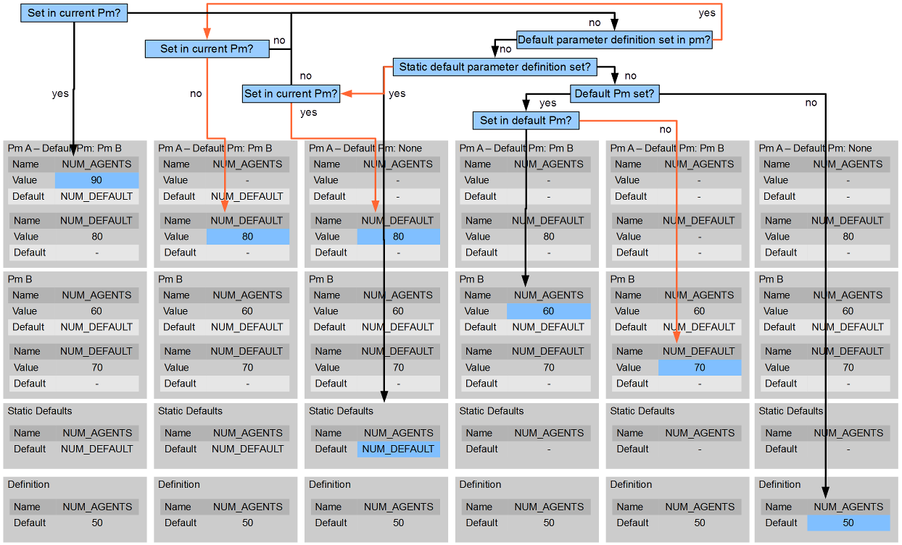

First, read section Getting ParMa to work. Then, read the hints to the specific parameter readers below.
The PmParameterManager is the central unit of the ParameterFramework. PmParameterDefinitions are registered at the manager.
Its init() method is called to read in available parameter data. The way to accomplish that task is defined by PmParameterReaders that are registered at the PmParameterManager and have a initParameters() method that is called from the manager. If no parameter values are read in, the parameter manager resolves parameter values in a certain way:
See the figure for various scenarios of parameter value resolution.
NOTE: Generally, default parameters have precedence before default PMs: If in a PM a default parameter B is defined for a certain parameter A and parameter A is not assigned a value, ParMa resolves the value for parameter B even if parameter B is not assigned a value in both the current PM and its default PM (and even if the default PM defines a value for parameter A). Thus, ParMa might step back to the default value of parameter B even if the default PM has assigned a value for parameter A.
First, PmParameterDefinitions need to be created. For convenience, these parameter definitions are defined by an enumeration, as the following example shows:
public enum PmFrameworkPa implements PmParameterDefinition {
/**
* Location of XML file that specifies database settings:
*/
DB_SETTINGS_FILE(String.class, "./DbSettings.xml");
private Class<?> type;
private Object defaultValue;
PmFrameworkPa(Class<?> type) {
this(type, null);
}
PmFrameworkPa(Class<?> type, Object defaultValue) {
this.type = type;
this.defaultValue = defaultValue;
}
public Class < ? > getType() {
return type;
}
public Object getDefaultValue() {
return defaultValue;
}
}
In order to add a parameter you just need to add an enum value. Also consider to add a respective column in the parameter table in case you use the PmDbParameterReader (see here for further instructions).
Consider the following steps during model initialisation to initialise ParMa properly:
PmParameterManager.registerReader(new PmXmlParameterReader());
PmParameterManager.init();
The PmDbParameterReader connects to a MySQL database using PmFrameworkPa.LOCATION, PmFrameworkPa.DBNAME, PmFrameworkPa.USER, and PmFrameworkPa.PASSWORD and fetches parameter values from a specific row (PmFrameworkPa.PARAM_SET_ID) of a certain table (PmFrameworkPa.TBLNAME_PARAMS). In doing so it reads all columns that follow the correct naming pattern ([package].[Classname]:[parameter name]), eg. de.cesr.sonomode.param.BasicPa:NUM_AGENTS. Make sure to assign the correct data type to the column that enables Java to assign the value to the parameter.
There are two ways to set values for the database parameters:
<?xml version="1.0"?>
<settings>
<db>
<SQL_LOCATION>mysql</SQL_LOCATION>
<SQL_DBNAME>project</SQL_DBNAME>
<SQL_USER>user</SQL_USER>
<SQL_PASSWORD>password</SQL_PASSWORD>
<SQL_TBLNAME_PARAMS>table_params_main</SQL_TBLNAME_PARAMS>
</db>
</settings>
The PmDbXmlParameterReader also should be registered at the PmParameterManager before the PmDbParameterReader, whereas SqlPa.DB_SETTINGS_FILE contains the XML-file's location:
PmParameterManager.registerReader(new PmDbXmlParameterReader(SqlPa.DB_SETTINGS_FILE));
PmParameterManager.setParameter(PmFrameworkPa.LOCATION, "localhost"); PmParameterManager.setParameter(PmFrameworkPa.DBNAME, "agentbm"); PmParameterManager.setParameter(PmFrameworkPa.USER, "modeller"); PmParameterManager.setParameter(PmFrameworkPa.PASSWORD, "password"); PmParameterManager.setParameter(PmFrameworkPa.TBLNAME_PARAMS, "params");
There are three ways to set the parameter-set ID:
PmParameterManager.registerReader(new PmDbParameterReader(BasicPa.PARAM_SET_ID));
PmParameterManager.setParameter(PmFrameworkPa.PARAM_SET_ID,
PmParameterManager.getParameter(BasicPa.PARAM_SET_ID));
<?xml version="1.0"?>
<sweep runs="0">
<parameter name="PARAM_SET_ID" type="number" start="1" end="10" step="1"/>
</sweep>
Then, read the RS parameter PARAM_SET_ID and assign it to the ParMa framework's PARAM_SET_ID:
if (RunEnvironment.getInstance().getParameters().getSchema()
.contains("PARAM_SET_ID")) {
PmParameterManager.setParameter(BasicPa.PARAM_SET_ID,
((Integer) RunEnvironment.getInstance().getParameters()
.getValue("PARAM_SET_ID")).intValue());
}
Column names for parameters require the form package.Enumeration:PARAMETER_NAME (only exceptions are 'id' and 'description' - all others raise a warning). Note that you need to specify quotes around these constructs in SQL. The param set id refers to the column named "id" within the table.
Sometimes it is necessary to by-pass parameter reading from database, e.g. when a database is not available but the reader is configured in the source code. By-passing is enabled by setting <SQL_TBLNAME_PARAMS to "NOT DEFINED":
<SQL_TBLNAME_PARAMS>NOT DEFINED</SQL_TBLNAME_PARAMS>
PmXmlParameterReader parses parameter data that is specified in an XML file. As in database tables, parameter names need to be given in the form package.Enumeration:PARAMETER_NAME. XML parameter files look like this:
<?xml version="1.0"?> <parameters> <de.cesr.parma.tests.BasicPa:NUM_AGENTS>100</de.cesr.parma.tests.BasicPa:NUM_AGENTS> <de.cesr.parma.tests.BasicPa:MUE>0.1</de.cesr.parma.tests.BasicPa:MUE> </parameters>
The PmXmlParameterReader is useful to provide default parameter values that are not hard-coded (initialise the reader at first) or to override parameter value, e.g. from database in order to test certain settings (initialise the reader at last). Note that you may invalidate the run information mechanism in the latter case!
The PmDbXmlParameterReader is a special version of PmXmlParameterReader and reads in database settings specified in an XML-file whose name and location is defined in PmFrameworkPa#DB_SETTINGS_FILE. The PmDbXmlParameterReader is registered at the PmParameterManager by default.
It is easy to copy a value from one parameter to another:
PmParameterManager.copyParameterValue(PmFrameworkPa.DBNAME, MSqlPa.DBNAME);
This is especially useful to copy a parameter defined in the user model to one or more libraries. Note: It is important to do the copy invocation after any assignment to the parameter that is copied. Otherwise, the new value of the source parameter does not effect the target parameter of the copying process!
In case there are several instances of a model part that shall all use the same parameter definitions but with different values assigned you need to create several instances of PmParameterManager:
PmParameterManager.getNewInstance()
It is also possible to pass an identifier. This way, the instance is stored and can be obtained with the help of the identifier. This is useful e.g. when you need a specific instance for each region of a spatial simulation. You might want to use the region object as identifier:
PmParameterManager pm = PmParameterManager.getNewInstance(region); PmParameterManager.getInstance(region).setParam(paramDefinition, value); PmParameterManager.getInstance(region).getParam(paramDefinition);
Note that instance methods use the abbreviation "Param": setParam(paramDefinition, value) and getParam(paramDefinition). Using pm.getParameter(paramDefinition) results in accessing a different instance (required for backward compatibility)!
Furthermore, it is possible to use a static method and pass the identifier object to set the parameter at a specific instance of PmParameterManager:
PmParameterManager.setParameter(region, paramDefinition, value); PmParameterManager.getParameter(region, paramDefinition);
Often specific parameter values are only required for a limited set of parameters while others shall be defined globally. For this case, a default instance of PmParameterManager can be defined for each parameter manager instance. As a consequence, ParMa uses parameter values assigned in the default instance if a value for the particular parameter is not assigned in the current instance. See Resolving Parameter Values for more information.
In case more than one database sources (also true when more than one tables in the same database shall be accessed) shall be used, one needs to initialise parameters in several steps:
PmParameterManager.setParameter(PmFrameworkPa.XML_PARAMETER_FILE,
PmParameterManager.getParameter(BasicPa.XML_PARAMETER_FILE));
PmParameterManager.setParameter(PmFrameworkPa.DB_SETTINGS_FILE,
"./config/DBSettings.xml");
PmParameterManager.setParameter(PmFrameworkPa.PARAM_SET_ID,
PmParameterManager.getParameter(BasicPa.PARAM_SET_ID));
PmParameterManager.registerReader(new PmDbXmlParameterReader());
PmParameterManager.registerReader(new PmDbParameterReader(BasicPa.PARAM_SET_ID));
PmParameterManager.registerReader(new MilieuPrefDataReader());
PmParameterManager.init();
PmParameterManager.setParameter(PmFrameworkPa.DB_SETTINGS_FILE,
"./config/DBSettingsSocNet.xml");
new PmDbXmlParameterReader().initParameters();
new PmDbParameterReader(SocNetPa.SOCNET_PARAM_ID).initParameters();
new PmXmlParameterReader().initParameters();
First, XML file locations for a PmXmlParameterReader and PmDbXmlParameterReader are passed from custom parameter definitions (PmFrameworkPa.XML_PARAMETER_FILE) or hard coded PmFrameworkPa.DB_SETTINGS_FILE to the ParMa framework definitions.
Furthermore, the param set id is copied from custom parameter definition. Note, for Repast Simphony batch runs you need to ensure that the parameter set id from the RS parameter scheme are passed to ParMa before any PmDbParameterReader are initialised! Afterwards, may not override the RS settings by copying custom definitions!
Then, number of readers including the PmDbXmlParameterReader and the first PmDbParameterReader are registered at the PmParameterManager and are initialised afterwards in the given order.
Afterwards, another XML file is set as DB_SETTINGS_FILE to read parameters from another table. Then, PmDbXmlParameterReader is initialised directly (thus, there is no need to register readers at PmParameterManager), and the second PmDbParameterReader is initialised directly as well.
At last, the PmFrameworkPa.DB_SETTINGS_FILE is initialised with the XML file specified at the beginning in order to possible override certain parameters.
For instance, if you want to instantiate in parallel several objects of a class with different parameter values using ParMa this requires special consideration: You need to initialise and use a specific instance of PmParameterManager for each independent model part to prevent side effects.